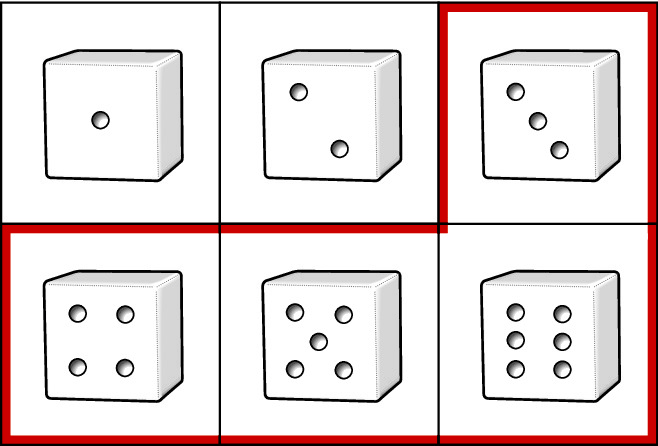
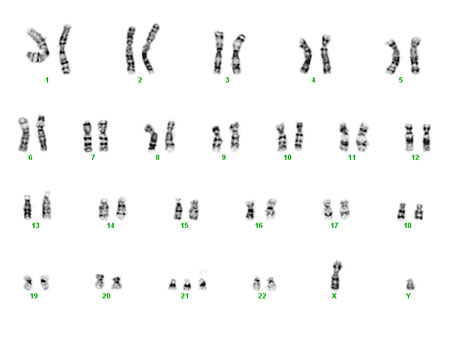
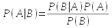
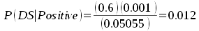

Why biologists study probability
As you now know, in Biology we work with material that is variable, and biological variation inevitably leads to a degree of uncertainty when we conduct experiments.
However, even variables that are subject to random variation aren't completely unpredictable. When we work with random variables we may not be able to make definite statements (such as, "if you smoke you will get cancer"), but we can make statements about the probability of outcomes (such as, "if you smoke you increase your chances of getting cancer").
This is much like the type of predictability we expect when we toss a coin. We know that when we toss a coin a single time we can't know in advance whether it will land heads or tails, but we can say that the probability of heads is 1/2 and the probability of tails is 1/2. So, even though a single coin toss is completely unpredictable, if we toss the coin 100 times we can be pretty sure that we will get close to 50 heads and 50 tails.
We have already dealt with probability when we studied sampling and estimation. For example, if we were sampling heights of students from the population at CSUSM, we might get a mean of 5' 7", but since we know that a different set of students would give us a different mean we calculated a confidence interval that predicts the range of values with a 95% chance of containing the population mean we are estimating. We saw that even though we couldn't know whether any particular confidence interval did or did not contain the population mean, across many samples and many intervals very close to 95% can be expected to contain the population mean. Thus, in spite of the uncertainty that comes from randomly sampling from a population, we could still draw conclusions from our data.
All of statistical analysis of data is based on probability, so we need to understand the fundamentals of probability to understand our data analysis tools. We will just scratch the surface of this very large and complicated subject, but it is vital that you understand the basics of probability in order to understand what you learn in the rest of the semester.
Probabilities of single events
We should start by defining probability. Probability can be defined in different ways, but we will be adopting a frequentist approach to probability in this class. This means that we will think of probabilities as being the number of times an event occurs divided by the number of trials we conduct - in other words, probabilities are relative frequencies of events. An event is some outcome of interest for which we are calculating a probability - if we were interested in the probability of rolling a 4 on a six sided dice, the event of interest would be rolling a 4. "Trials" are the opportunities for an event to occur - rolling the dice once is a single trial.
There are two special cases of probabilities you should be aware of:
- A probability of 0 means that an event is impossible. Rolling a 7 with a single roll of a six-sided die has a probability of 0. No matter how low they get, a non-zero probability still means that an event is possible, and is not the same as a probability of 0.
- A probability of 1 means that an event must happen. Rolling a die once and getting a 1, 2, 3, 4, 5, or 6 must happen, so it has a probability of 1.
Where probabilities come from
It is often possible to specify probabilities of events based on our understanding of the nature of the trials that are being run. For example, if we are rolling a six-sided die, and if we assume that each side is equally likely to land face up - that is, we assume the die is fair - then we can specify the probability of rolling a four as being 1/6, or 0.167. This is because there are six possible outcomes, and rolling a 4 is only one of them.
Probabilities can thus be thought of as proportions of a total, and we can express probabilities as percentages to help us interpret them. For example, we can say that if we have a 100 x 0.167 = 16.7% chance of rolling a 4 in one toss of a die. This is what we meant when we said that a confidence interval has a 95% chance of containing the population mean we are estimating - we meant that the probability that the interval included the population mean was 0.95.
Probabilities of single dice rolls are pretty simple, because any single roll of the dice can give us one and only one outcome. When one and only one outcome can occur in a trial, we say the events are mutually exclusive. We also know all the possible outcomes - the die can land with a 1, 2, 3, 4, 5, or 6 - and if a list includes all of the possible outcomes for a trial the list is called exhaustive. The sum of the probabilities of all of the possible outcomes in an exhaustive list will equal 1 (that is, 1/6 + 1/6 + 1/6 + 1/6 + 1/6 + 1/6 = 1).
Sometimes probabilities can't be calculated based on an understanding
of the system under study, and they have to be estimated empirically.
For example, if we were interested in the probability of randomly
selecting a person from the population that has high blood pressure, we
can't look at the number of different ways there are to get high blood
pressure and divide by the number of people in the country - the human
body is far too complicated, with too many factors influencing blood
pressure, to figure out the probability from first principles, like we
did with dice. What we can do is to collect data on the incidence of
high blood pressure - incidence is the percentage of the population that
has the condition. If we found that 22% of the population has high blood
pressure, then that the relative frequency of people in the population
with high blood pressure is 0.22. We can interpret a relative frequency
as the probability of randomly selecting a person who has high blood
pressure.
Probabilities of
collections of mutually exclusive events

The rule that we use to combine probabilities of events that are
mutually exclusive and exhaustive is the addition rule,
which tells us the probability that any one of the mutually exclusive
events occurring is the sum of their probabilities. If we wanted to know
the probability that a three, four, five, or six will land face up, the
addition rule tells us to sum their probabilities: 1/6 + 1/6 + 1/6 + 1/6
= 4/6. You can think of the addition rule as pertaining to or
events - that is, we are asking "What is the probability of a three, or
a four, or a five, or a six?". Probabilities of any one of a set of
events occurring are "or" probabilities.
We can use the addition rule in a slightly different way to calculate "not" probabilities. Since we have mutually exclusive, exhaustive events, we could have calculated the probability of three, four, five, or six by first calculating the probability of one or two, then subtracting that from 1; that is, the probability would be 1 - 2/6 = 4/6. This is a simple enough example that either approach is pretty easy, but we will make use of this trick for some more complex calculations later.
Probabilities of events that are not mutually exclusive
|
When events aren't mutually exclusive we can have two events occur at the same time. To stick with dice for the moment, if we rolled two dice at once, then we would have the possibility of rolling a 1 on one dice and a 1 on the other (click on the dice to roll them). These are joint probabilities, because both events are happening at once. We can calculate the probability of two events occurring at the same time by multiplying the probabilities of each event. This is the product rule of probability for events that are not mutually exclusive. Symbolically, the product rule states that P(A and B) = P(A) x P(B) The probability of a 1 on one die and a 1 on the other would thus be 1/6 x 1/6 = 1/36. If you click on the dice to roll them you should get 1's on both about once every 36 rolls. |
The product rule only works if the events are independent. Independence means that one event occurring gives no information about whether another will occur. Usually, we will assume that events are independent if we know enough about the trials to be confident that the events can't influence one another. It's not plausible that the first die tossed will have any effect on the second die, so we will generally assume that the events are independent for dice rolling.
|
What would events that are not independent look like? We could make two dice dependent on one another by gluing them together. If we did this, then the faces that are glued in the same orientation would come up together, and would never occur in combination with other faces. With such an extreme dependency between the dice, if we knew which side was face up on one die we would be completely certain of which side was face up on the other. |
By the way, if you did decide to click the dice to see how often you get two 1's you may have had to wait longer than 36 tosses, or you may have gotten two 1's in just a few rolls due to random chance. Big differences from the expected number can happen with just a few trials. However, if you rolled many, many times you would find that 1 out 36 rolls will be two 1's. This is the law of large numbers, which states that the frequencies of random trials will equal the expected outcome as the number of trials goes to infinity. If we are using actual dice rolls to empirically estimate the probability of rolling two 1's, we would need to roll many times to get a good estimate.
Independent variables
|
In biology we wouldn't be studying the relationships between rolls on two dice, we would be interested in relationships between variables like smoking and blood pressure. To keep this relatively simple we'll treat both smoking and blood pressure as categorical variables made up of two levels each - smoking is made up of the levels smoking and non-smoking, and blood pressure is made up of levels high blood pressure and normal blood pressure. These two variables can obviously occur together - it's possible for a smoker to have high blood pressure - so they are not mutually exclusive. If you look at the video to the left you'll see that we have information about the percentage of people in the US that smoke (17%) and the percentage that have high blood pressure (22%). The illustration is set up so that 22% of smokers get high blood pressure (or, conversely, you can say that 17% of people with high blood pressure smoke). |
Since in this example 22% of all people have high blood pressure and 22% of smokers have high blood pressure, knowing that a person smokes doesn't tell us anything about his or her chances of having high blood pressure.
This is one way to think of what it means for two variables to be independent: if two variables are independent, then having information about one variable gives no information about the other.
We can also use the fact that 22% of smokers are expected to have high blood pressure to calculate the percentage of the population that should both be smokers and have high BP. 22% of 17% is equal to 100 (0.22 x 0.17) = 100 x 0.037, which is 3.7%. If we express these just as probabilities, the probability of a person being both a smoker and having high blood pressure is 0.22 x 0.17 = 0.037.
You may have noticed that this calculation uses the product rule of probabilities, which works here because the two variables are independent.
Probabilities from a table
To understand what it means for two variables to be independent, it's useful to express the numbers in terms of what the data would look like for a study of smoking and high blood pressure. We will use the percentages from the diagram, above, and build a table of data that would produce those numbers.
A probability of high blood pressure of 0.22 means that 22 out of 100
people have high blood pressure. The other category for blood pressure
would be Normal BP, and if 22 out of 100 have high blood pressure then
100-22 = 78 must be normal. Likewise, a probability of 0.17 for smoking
means that 17 out of 100 people are smokers, and 83 out of 100 are not.
The table below represents these numbers as marginal totals,
meaning totals in the margins of the table (along the bottom row and the
right column).
| Smoking | |||
|---|---|---|---|
| Blood pressure | Smoker | Non-smoker | (Marginal Row) Total |
| High | 22 | ||
| Normal |
78 |
||
| (Marginal Column) Total | 17 | 83 | 100 |
From these marginal totals we can calculate marginal probabilities. Marginal probabilities just express the counts in terms of probabilities - the probability of high blood pressure is 22/100 = 0.22, and the probability of being a smoker is 17/100 = 0.17. These marginal probabilities only consider one outcome at a time - the probability of high blood pressure is based on the number of people with high blood pressure (22) regardless of whether they are a smoker or not.
|
Now that we have the marginal totals, we can calculate the rest of the numbers in the table, assuming that smoking and BP are independent. Watch the video to the left to see how we would put the rest of the table together, such that smoking and blood pressure are independent, like the diagram above illustrates. |
So, this table reflects what independent events look like - 22% of all people have high blood pressure (22/100 = 0.22), and 22% of smokers have high blood pressure (3.7/17 = 0.22), just like in the diagram above.
Non-independent variables
In fact, we know that smoking is a risk factor for high blood pressure, so if we know a person smokes then we would expect him or her to have a greater probability of having high blood pressure. If smokers have a higher probability of having high blood pressure than non-smokers, then the chances of having high blood pressure depends on whether you smoke or not - and it should be obvious that if blood pressure depends on smoking, then they can't be independent.
|
Let's see how non-independent variables compare with the independent case. For illustrative purposes we'll construct the most extreme dependence possible by making everyone who smokes get high blood pressure. In the animation to the left, we pick up where we left off above, with the illustration of independence between smoking and BP. As the video progresses, the shaded areas change until every smoker also has high blood pressure, which means that 17% of the population is both a smoker and has high blood pressure. So, we can now be certain that if we randomly select a person who smokes he or she will also have high blood pressure. On the other hand, non-smokers make up the part of the high BP circle that's not overlapping with the smoker circle. The entire high BP circle has an area of 22%, and the smoker circle has an area of 17%, so the non-smokers who have high BP are 22-17 = 5% of the population. The part of the illustration that is covered by non-smokers is 100-17 = 83%, so the probability of high BP for somebody who is a non-smoker is 0.05/0.83 = 0.060. |
That means that in this illustration 100% of smokers get high BP, but only 6% of non-smokers do. Since the chances of getting high blood pressure are different for smokers and non-smokers, the probability of getting high BP depends on whether you're a smoker - therefore, smoking and BP are not independent.
Let's build a table that shows what the data would look like.
|
The process is the same as before, except that we start by assigning all 17 smokers to High BP. The marginal totals are all kept the same, so once we have this one cell in the table entered all the others can be calculated. The marginal totals are the same, so the marginal probabilities are the same too. But, the "and" probability of smoking and high BP is not the same as before when the two were independent. |
The probability of having high blood pressure and being a smoker is like asking:
"What is the probability of randomly selecting one of the 100 people in this table and having him or her be both a smoker and having high blood pressure?"
The probability would just be the number of people that smoke and have high blood pressure (the event) divided by the number of people counted (the trials). Smokers with high blood pressure are 17 out of 100 people, so the probability would be 17/100 = 0.17.
Since the marginal probabilities haven't changed, the product rule tells us we would expect the probability of being a smoker and having high blood pressure to be 0.22 x 0.17 = 0.037. The probability we just calculated from the table, though, is 0.17, which is much higher than 0.037. Since the product rule only works when variables are independent, and it's not working here, we now have one way of judging independence of variables:
Test of independence 1: If the observed probability of two events occurring at the same time matches the product of the marginal probabilities, the variables are independent. If the observed probability is different from what we calculate using the product rule then the variables are not independent.
Or probabilities for events that are not independent
Let's take a minute to see how an "or" probability has to be calculated when events are not mutually exclusive. If we wanted to calculate the probability of high blood pressure or smoking, we could not just add the marginal probability of high blood pressure to the marginal probability of smoking to get the answer. If we did that, we would add 22/100 + 17/100 to get 39/100, or 0.39. The problem with this is that the 17 people who are both smokers and have high blood pressure are being counted twice. If it's not obvious why this is a problem, try doing the calculation for non-smokers who have normal blood pressure - you get 78/100 + 83/100 = 161/100, which can't be right. Can you tell why? Click here to see if you're right.
Let's see how to fix this. Just like the "and" probability we can think of this "or" probability as being the probability of randomly selecting one of the 100 people in the data set and having him be a smoker or having high blood pressure. The people that meet at least one of these two criteria are highlighted in light blue:
| Smoking | |||
|---|---|---|---|
| Blood pressure | Smoker | Non-smoker | Total |
| High | 17 |
5 |
22 |
| Normal |
0 |
78 |
78 |
| Total | 17 | 83 | 100 |
We just need to add up the people shaded in blue (the events), and divide by the total of 100 (the trials) - with 0 + 17 + 5 = 22 people who either have high blood pressure or smoke, we get a probability of smoking or high blood pressure of 22/100 = 0.22.
Remember that the addition rule only works when events are mutually exclusive. The reason for this is that if we add the probability of high blood pressure (22/100) to the probability of being a smoker (17/100) we're adding the 17 people who are smokers with high BP twice. To fix the problem with the addition rule for use when events aren't mutually exclusive, all we need to do is to subtract the double-counted people. So, we could modify our calculation to be:
22/100 + 17/100 - 17/100 = 22/100
Symbolically, this is:
P(A or B) = P(A) + P(B) - P(A and B)
which is the general addition rule. The general addition is considered "general" because it works for either mutually exclusive events or non-exclusive events. If we have mutually exclusive events, the probability of A and B occurring together would be 0, so the formula simplifies to P(A) + P(B), which was our original addition rule for mutually exclusive events.
Note that P(A and B) has to be calculated correctly for this to work - if the variables are dependent (as these are) we need to account for the dependency (we can't use the product rule to calculate P(A and B), because 0.22 + 0.17 - 0.037 = 0.353 isn't the right answer).
Conditional probability
We can take our table of smoking and blood pressure and use it to ask a different kind of question. When we asked our "and" probability question, the process we were imagining was that we randomly selected a person from a population of people, and then recorded whether that person was a smoker, and whether the person had high blood pressure. This means that both smoking and blood pressure were unknown until we selected the person, and both outcomes were subject to random chance.
A different situation arises when one event has already occurred, and we want to know the probability that the other will occur given our knowledge of the first. This type of probability is called a conditional probability, because the probability we are calculating is subject to the condition that we know that another event has already occurred. We denoted an "and" probability as P(A and B), but conditional probabilities are denoted P(A | B), where the vertical line is read as "given".
So, for example, what if we knew that somebody was a smoker, and we wanted to know the probability that he or she had high blood pressure? This would be P(High BP | Smoker), which reads "The probability of high blood pressure given that the person is a smoker". If we already know we're dealing with a smoker, then the numbers pertaining to non-smokers are not relevant anymore, and we can ignore them. Instead, we calculate the probability of high blood pressure just from the data in the Smoker column.
| Smoking | |||
|---|---|---|---|
| Blood pressure | Smoker | Non-smoker | Total |
| High | 17 |
5 |
22 |
| Normal |
0 |
78 |
78 |
| Total | 17 | 83 | 100 |
Of the 17 total smokers, 17 have high blood pressure, so our probability of blood pressure given we know the person is a smoker is P(High BP | Smoker) = 17/17 = 1.
Notice that even though the "and" probability and the conditional probability both have High BP and Smoker in them, the conditional probability is very different. If we randomly select a person without knowing either if he or she is a smoker or has high BP, then both are subject to random chance and we are calculating an "and" probability (which recall was 17/100 = 0.17).
We can revisit the example of independence between smoking and blood pressure, and do the same conditional probability calculation on it.
| Smoking | |||
|---|---|---|---|
| Blood pressure | Smoker | Non-smoker | Total |
| High | 3.7 |
18.3 |
22 |
| Normal |
13.3 |
64.7 |
78 |
| Total | 17 | 83 | 100 |
If smoking and high BP are independent, then P(High BP | Smoker) = 37/170 = 0.22
You can see that when the variables are independent the conditional probability of high blood pressure is the same as the marginal probability of high blood pressure, 0.22 in both cases.
This gives a second quantitative way of determining if variables are independent:
Test of independence 2: when the marginal probability of an outcome on one variable is the same as the conditional probability of the outcome given a known outcome on a second variable, then the two variables are independent.
If the marginal probability is not equal to the conditional probability, the variables are not independent.
We've been working with contrived data in which all smokers have high blood pressure, but in the real world it isn't that clear cut. A more realistic set of numbers might look like this:
| Smoking | |||
|---|---|---|---|
| Blood pressure | Smoker | Non-smoker | Total |
| High | 10 |
12 |
22 |
| Normal |
7 | 71 |
78 |
| Total | 17 | 83 | 100 |
Notice that the marginal probabilities are the same as before, but the distribution of combinations of smoking and blood pressure is different, and some smokers don't have high blood pressure. With this different distribution, the conditional probability of having high blood pressure if you smoke is:
10/17 = 0.588
Even though this version of the table didn't place all smokers into the high blood pressure group, the conditional probability is still not the same as the marginal probability of 0.22, so our second test of independence tells us that blood pressure depends on smoking. We can still conclude that smoking is a risk factor for high blood pressure, but now we would conclude that smoking increases the probability of high blood pressure, rather than guaranteeing high blood pressure.
The general product rule
Now that we know about conditional probability, we need to re-visit joint ("and") probabilities. Just like we had a problem with the addition rule when variables are not independent, we also can't use the product rule when variables are not independent. Instead, we need a general product rule that works even when variables depend on one another.
The general product rule tells us that:
P(A and B) = P(A)P(B|A)
If we wanted to know the joint probability of having High BP and being a Smoker, P(High BP and Smoker), we would use 22/100 as the marginal probability of High BP, and 17/22 as the probability of being a smoker given that the person has High BP. The probability of High BP and being a Smoker is thus:
22/100 x 17/22 = 17/100 = 0.17
This is the same number we would get by dividing the number of smokers with high BP (17) by the total number of people recorded (100) from the table. We can check if the order matters by using Smoker as A, and High BP as B:
17/100 x 17/17 = 17/100 = 0.17
The answer is the same, so it doesn't matter which outcome we use as A, and which we use as B.
Inverse probability
Now that we have the basics of marginal probabilities and conditional probabilities down, let's apply these different probabilities to a real-world problem.
It is common for doctors to use tests that are quick, inexpensive, and non-invasive to screen for diseases, even though they are not as reliable as more expensive, more invasive tests.
A good example of this is screening for Down syndrome (DS). Down syndrome can be caused by several different chromosomal disorders, but the most common is trisomy 21. We get one copy of each of our 23 chromosomes from each parent during fertilization, and thus normally we have two copies of each chromosome (you are a diploid organism). Sometimes during cell division an extra copy of a chromosome is created, leading to 3 copies instead of 2. If chromosome 21 ends up with a third copy, the developing fetus develops Down syndrome.
|
Down syndrome can be detected with nearly perfect accuracy by doing amniocentesis. Amniocentesis involves sampling fetal cells present in the amniotic fluid surrounding a developing fetus. Fetal cells can be karyotyped to count the number of chromosomes. Karyotypes, like the one on the left, identify all of the chromosomes in a dividing cell, and once the chromosomes have been matched up it's easy to count how many copies of each are present. You can see in this karyotype chromosome 21 has three copies instead of two. |
However, sampling amniotic fluid involves piercing the membranes surrounding the fetus, which entails a small risk of causing a miscarriage. Doctors and mothers are generally, understandably, extremely reluctant to do procedures that could cause a miscarriage, so even though amniocentesis is extremely accurate, it isn't done as a routine screening test.
Instead, doctors screen for indicators of trisomy in the mother's blood. When the fetus has a chromosomal abnormality, several fetal blood proteins will cross the placental wall into the mother's blood stream, and they can be detected by taking blood from the mother with no risk to the fetus. The "triple test" is the most common screening test for trisomy, which samples three indicators: alpha-fetoprotein (AFP), unconjugated estriol, and chorionic gonadotropin (hCG). When these indicators are elevated above a pre-defined cutoff value, the test is considered "positive", in that they indicate the presence of trisomy.
Triple test: the researcher's question
If we were developing the triple test we would be interested in knowing how effective it is. We can't know if the test is effective unless we know the DS status of the women, so we would want to use women for whom their DS status was known; we could use amniocentesis on the women in the study to establish their DS status, and then give them the triple test and count how often it gave positive and negative results for women with DS pregnancies and without DS pregnancies. For a study like this it is good experimental design to use an equal number of women in each DS status group. The data might look something like this:
| Test result | |||
|---|---|---|---|
| DS status | Positive | Negative | Total |
| DS | 60 |
40 |
100 |
| No DS |
5 | 95 |
100 |
| Total | 65 | 135 | 200 |
Note that this table is not a table from an actual study, but it was constructed from published statistics of the performance of this test (not real, but realistic). The statistics reported were:
Sensitivity = the probability of a correct positive test result. Sensitivity is a conditional probability, namely P(Positive | DS). Based on this table, sensitivity is:
60/100 = 0.6
That is, given that you already know that a woman has a DS pregnancy, the triple test correctly gives a positive result 60% of the time.
False positive rate = the probability of a positive result for women that don't have a DS pregnancy (it's a "false positive" because the test result is positive, but it's wrong). This is also a conditional probability, namely P(Positive|Non-DS). Based on the table, false positive rate is:
5/100 = 0.05
Both sensitivity and false positive rate are conditional probabilities that treat DS status as known, so we will consider these to be researcher's questions. Knowing DS status before conducting the test is nonsensical from a patient's perspective (if you know the answer already, why take the test?), but it makes sense for a scientist who is developing the test to see how often the test is correct.
The patient's question - if I get a positive triple test result,
what's the chance I have a DS pregnancy?
Patients don't already know their DS status, they take the triple test to find that out. When a pregnant woman takes the test and it comes back positive, the question is:
"What are the chances I actually have a DS pregnancy, given that I got a positive triple test result?".
This patient's question is also a conditional probability, P(DS|Positive). It looks a lot like sensitivity, P(Positive|DS), but it is actually the inverse of sensitivity in that DS and Positive entries are on opposite sides of the vertical line. This difference is huge, because it means that:
- The patient's question is a probability of DS. It is not a probability of a positive test result, because the positive test result is already known to have occurred, and isn't subject to random chance.
- Sensitivity (a researcher's question) is a probability of a positive test result. It is not a probability that the patient has a DS pregnancy, because a DS pregnancy has already been verified with amniocentesis, and is not subject to random chance.
Let's start by using the data from the study of the triple test to answer the patient's question. If we know the test result is positive we only need to consider the numbers in the Positive column. The conditional probability of having a DS pregnancy given a positive test result is thus:
60/65 = 0.92
This is the number of positive test results from women with DS pregnancies (the true positives) divided by the total number of positive tests (the true positives plus the false positives). Notice that this probability is not the same as sensitivity, P(Positive|DS), which was 0.6. Already it should be clear that inverting the probability can completely change the answer we get. But, this calculation does seem to be telling us the test is working - if you receive a positive triple test result, according to this probability there's a 92% chance you really do have a DS pregnancy.
But, this probability is based on data from a controlled, designed study in which an equal number of women with DS and Non-DS pregnancies were used. Using equal numbers of DS and non-DS pregnancies is good experimental design, but it sets the frequency of DS at 1 in 2. In the population as a whole DS is a rare disorder, occurring in only 1 in 1000 pregnancies, not 1 in 2. It turns out this has huge implications for the patient's question.
|
We can build a table that has the same properties as the data from the study (i.e. sensitivity of 0.6, false positive rate of 0.05) by applying these rates to a more realistic DS rate of 1 in 1000 pregnancies. Watch the video on the left to see how it's done. |
Now that we have some numbers that reflect the real world in which the tests will be given to patients, we can re-visit the patient's question. If we calculate P(DS | Positive) from this table by dividing true positives by total positives, we get:
0.6/50.55 = 0.012
This is dramatically lower than our calculation based on the study data, and it's even quite a bit lower than the test sensitivity of 0.6.
How did that happen? Note that we used sensitivity and false positive rate to build the table, and they are exactly the same for the population as they were for the study of the triple test - in other words, the test didn't stop working. The thing that changed is that in the population as a whole DS pregnancies are rare.
Let's look at why the rarity of DS pregnancies changes things. The animation below starts by illustrating the study population. The graph is divided evenly down the middle with DS pregnancies are on the left and No DS pregnancies on the right to reflect that the study population had equal numbers of the two. The red colored regions are positive test results, and blue regions are negative test results. Within the DS group 60% of women test positive to match the test sensitivity of 0.6. Within the No DS group 5% of the women test positive to match the false positive rate of 0.05.
|
|
Remember, the patient's question, P(DS | Positive), is answered by dividing the number of true positive by the total number of positive test results. The true positives are the red region in the DS group. The total number of positive test results is the sum of true positives in the DS group and false positives in the No DS group. You can see at the start of the video that in the study data most of the red comes from DS pregnancies, and relatively little red comes from no DS pregnancies - thus, the probability of actually having DS is high if you get a positive test result according to the study data. As you run the animation the only thing that changes is that DS pregnancies become less common, which is illustrated by the DS part of the graph getting very small. As this happens false positives account for an increasingly large proportion of red on the graph. As DS becomes rare, a positive test result is much more likely to be a false positive than a true positive.
|
Bear in mind that the sensitivity and false positive rates are exactly the same throughout the animation - positive test results are always 60% of the DS column, and 5% of the No DS column.
You might be wondering by now, given the low probability of actually having a DS pregnancy when one receives a positive result, isn't it cruel and inappropriate to use the triple test at all?
Bear in mind that if we didn't do the test at all, all a women would know is that DS occurs in 1/1000 pregnancies, and her probability of having a DS pregnancy is 1/1000. The probability of DS given a positive test is 12/1000, which is 12 times higher. So, even though the probability is still very small, doing the test did provide some information.
Also bear in mind that the test can also come back negative. We could also calculate the probability of not having a DS pregnancy given a negative result (P(No DS | Negative)), which would tell us that out of the 949.45 negative tests 949.05 of them are No DS pregnancies, for a probability of 0.999. Since DS is rare, most women will get negative test results, which are very likely to be accurate.
Finally, you should know that the triple test works better in older women - do you know why? Click here to see if you're right.
So, the triple test is used, but a positive result is treated as the first in a set of diagnostic steps. After a positive test, doctors will often order a re-test, and the second time the test is often negative. If the second test comes back positive as well, the doctor evaluates whether the woman has known risk factors of DS (like being over 40), and if the risk is high and the mother wants more definitive answers the doctor may recommend amniocentesis.
Bayes' Theorem
We've been solving conditional probability problems by building tables of data, which helps you to understand what conditional probabilities are. But, we can also use Bayes' Theorem to calculate conditional probabilities, which is:
This formula looks complicated, but now that you know what all of the terms mean it's not too difficult to figure out.
- P(A|B) is the conditional probability of A given that B is known to have occurred.
- P(B|A) is the conditional probability of B given that A is known to have occurred.
- P(A) is the marginal probability of A.
- P(B) is the marginal probability of B.
If we wanted to use this formula to calculate the patient's question, P(DS|Positive), we are using DS for A, and Positive for B. Here's the data table from the triple test study to remind us of each of these quantities:
| Test result | |||
|---|---|---|---|
| DS status | Positive | Negative | Total |
| DS | 60 |
40 |
100 |
| No DS |
5 | 95 |
100 |
| Total | 65 | 135 | 200 |
P(B|A) is P(Positive|DS), which is the sensitivity of the test. We know this is 60/100 = 0.6.
P(A) is the marginal probability of a DS pregnancy, which is 100/200 = 0.5.
P(B) is the marginal probability of a positive test, and we can calculate it from the test sensitivity, false positive rate, and the incidence.
- First, note that the marginal total for Positive is the sum of the cell for DS and Positive, plus the cell for No DS and Positive. We can express these counts as proportions of the total number of people measured, and the numbers become 0.6 for DS and Positive, 0.05 for DS and Negative, which together still sum to 0.65 for DS. We can thus get the marginal probability of DS by adding P(DS and Positive) and P(No DS and Positive).
- Next, to get P(DS and Positive) we use the general product rule:
- P(DS and Positive) = P(DS)P(Positive | DS)
- The first term, P(DS) is the incidence of the disorder in the population (100/200 in this "study" data set). P(Positive | DS) is the test sensitivity, which we know is 0.6. This give us:
- P(DS and Positive) = 0.5 x 0.6 = 0.3
- Likewise, we can get P(No DS and Positive) as:
- P(No DS and Positive) = P(No DS)P(Positive | No DS)
- The probability of No DS is 1 minus the incidence, which is 1-0.5 = 0.5 (there are only two possible outcomes, DS or No DS, and their probabilities have to sum to 1. Once we know that the probability of DS is incidence, then 1-incidence is the probability of No DS).
- The probability of a Positive test for a No DS patient, P(Positive | No DS) is the false positive rate, which is equal to 0.05. This gives us:
- P(No DS and Positive) = 0.5 x 0.05 = 0.025
- If we sum together P(DS and Positive) and P(No DS and Positive) we get P(Positive) = 0.3 + 0.025 = 0.325
We now have P(Positive | DS) = 0.6, P(DS) = 0.001, and P(Positive) = 0.325. Plugging these in to Bayes' Theorem we get:
P(DS | Positive) = (0.6 x 0.5) / 0.325 = 0.923
This is the same answer we got by using the table to calculate 60/65 = 0.923.
So, we don't need Bayes' theorem when we have tables of outcomes, but sometimes working with the probabilities is more convenient. For example, we could use the reported test sensitivity and false positive rate to calculate P(DS|Positive) for a woman taking the test in the real world. We would know the sensitivity of the test is 0.6 based on the study of effectiveness, which is P(Positive | DS). We know the frequency of DS in the population is 0.001, which is P(DS). We can calculate the probability of a positive test as:
P(Positive) = 0.001 x 0.6 + 0.999 x 0.05 = 0.05055
From those three probabilities we get:
which matches what we got by dividing true positives by the total number of positive test results for the population, 0.6/50.55 = 0.012.
This week
In lab this week we will work with probabilities, and practice interpreting them.